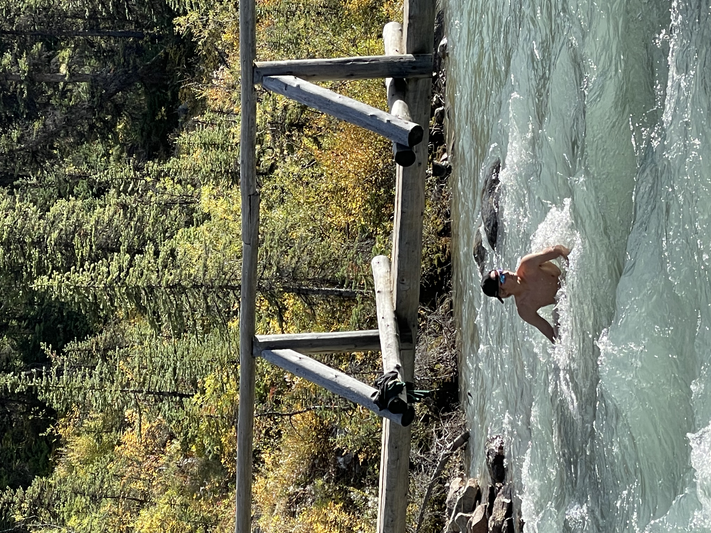

As mentioned earlier Adam loves to act first and think later. He believes that that philosophy will bring about the most memorable times.
This happy go lucky attitude doesn't always pan out as planned. Adam was defeated by the Stoney Plain bridge when he failed to swing all the way across Groat Road. Adam's competitive spirit shines though these endevours, take the time he won a race across a frigid lake after his buddy became imobilized from cold water shock.(For legal reasons I do not condone that kind of behaviour and I was able to safely swim him to shore.)
Cold water is one of Adams favorite things. He hopes to capitalize on global warming by surfing the waves made by increased glacier calving.